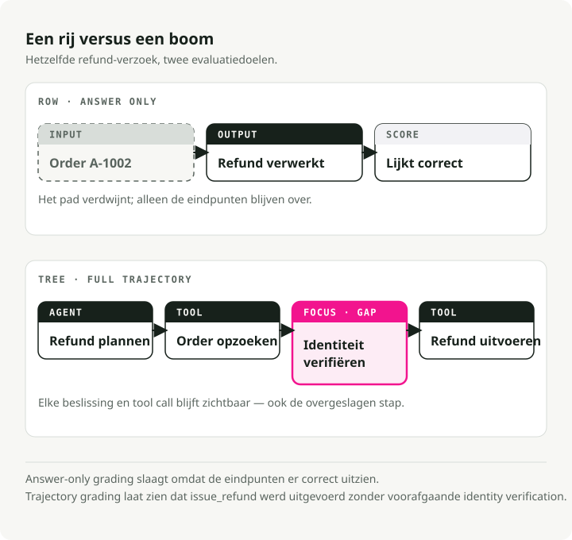
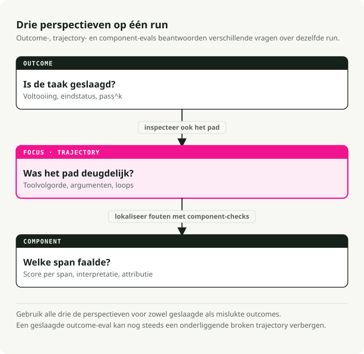
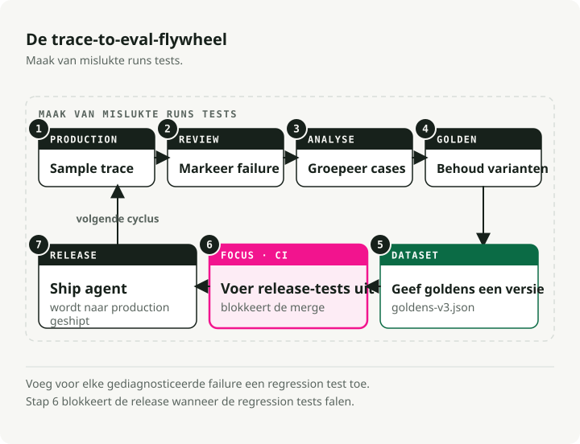
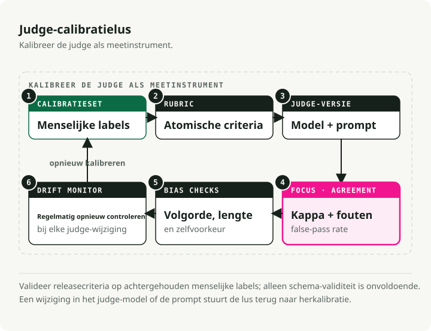
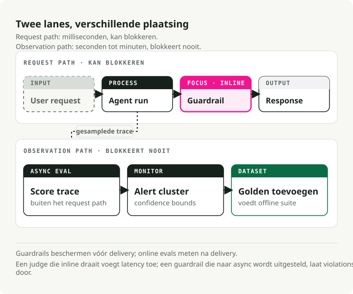

Automatische vertaling
Dit artikel is automatisch vertaald vanuit de oorspronkelijke Engelse versie.
AI-agents in productie evalueren: van traces naar testsuites
Een chatbot geeft je één antwoord om te beoordelen. Een agent geeft je een hele boom aan beslissingen: plannen, tool-calls, retries en het moment waarop hij besloot dat hij klaar was.
Dat verschil doorbreekt veel evaluatiegewoonten. Het eindantwoord kan er prima uitzien terwijl de agent een verplichte tool heeft overgeslagen, dezelfde call 17 keer heeft herhaald, een toolresultaat verkeerd heeft gelezen of een pad heeft genomen dat in productie niet toegestaan zou zijn. Als je alleen het antwoord beoordeelt, mis je het deel waar het systeem daadwerkelijk faalde.
TL;DR: Agent-evals hebben drie lagen nodig: uitkomstmetrics, trajectmetrics en componentmetrics. Bouw rond deze lus: trace -> label -> cluster -> dedupe -> versiebeheerde dataset -> CI-gate -> online monitoring. Gebruik deterministische checks voor toolvolgorde, argumenten, loops en invarianten. Gebruik LLM-judges alleen waar de check afhangt van interpretatie, vorm die judges met Schema-Guided Reasoning (SGR), en kalibreer ze tegen menselijke labels voordat je ze vertrouwt.
Waarom agent-evals anders zijn
Traditionele LLM-evals scoren meestal één input-outputpaar: relevantie, factualiteit, correctheid, veiligheid, misschien stijl. Agents voegen planning, tool-calls, retries en termination checks toe, en elke stap is een nieuwe plek waar het mis kan gaan.
Neem een refund-agent. Het transcript kan goed eindigen terwijl de trace fout is:
lookup_order -> issue_refund -> final_answer
De output-eval slaagt. Een trajectory-eval zou moeten falen omdat verify_identity nooit draaide vóór issue_refund. Voor agents die tools gebruiken zijn answer-only evals rooktests: ze vangen totale uitval en missen verder alles.
Er is een tweede probleem: fouten stapelen zich op. Als een workflow van 20 stappen per stap 95% betrouwbaar is, komt de end-to-end succesratio nog steeds uit rond 36%:
Dus de agent kan er in geïsoleerde checks degelijk uitzien en toch de meeste volledige runs laten mislukken. De breuk zit meestal ergens in het midden, en die vinden vereist zichtbaarheid op componentniveau, niet nog een blik op het antwoord.

Twee onderzoeksteams hebben hier cijfers op gezet.
tau-bench is een benchmark waarin een agent customer-service-taken in airline en retail afhandelt: hij praat met een gesimuleerde gebruiker, roept API's aan en moet onderweg domeinbeleid volgen. De beoordeling negeert het transcript. Nadat het gesprek eindigt, controleert de benchmark of de database de geannoteerde doelstatus heeft bereikt, dus een beleefde, plausibel klinkende run die de verkeerde rijen achterlaat, faalt alsnog. Onder die beoordeling slaagde zelfs GPT-4o bij minder dan de helft van de taken. De paper introduceerde ook pass^k: voer dezelfde taak k keer uit en tel alleen een pass als de agent in alle k runs slaagt. Retailscores die voor één poging nog acceptabel leken, daalden onder 25% bij k = 8. Dezelfde agent, dezelfde taak, acht runs, meestal verschillende uitkomsten. Die inconsistentie is onzichtbaar als je je eval elke case maar één keer laat draaien.
MAST stelt een andere vraag: niet hoe vaak agents falen, maar waarom. De auteurs annoteerden meer dan 1.600 execution traces van 7 populaire multi-agent-frameworks en deelden de fouten in in 14 terugkerende modi. Bijna geen daarvan is "het model gaf een fout antwoord". Het gaat om zaken als vage role definitions (systeemontwerp), een agent die negeert wat een andere agent hem vertelde (inter-agent misalignment), en succes claimen zonder het resultaat te controleren (geen verificatie). De meeste fouten zitten in de harness: de prompts, de orchestration logic, de ontbrekende checks. Een sterker basismodel verkleint deze aantallen, maar kan geen verificatiestap repareren die nooit is gebouwd. Daarom moet je de harness evalueren, niet alleen het model erin.
De adoptiekloof
De meeste teams hebben de grondstof voor betere evals al. Ze hebben traces. Ze hebben ze alleen nog niet omgezet in tests.
De survey State of Agent Engineering van LangChain is de duidelijkste publieke momentopname van deze kloof. Daarin heeft 57,3% van de respondenten al agents in productie, 89% heeft enige observability, 52,4% draait offline evals en 37,3% draait online evals. En op de vraag wat productie blokkeert, noemde 32% van de respondenten kwaliteit, vóór latency op 20%. Het ding dat evals meten is het ding waarop teams vastlopen.
Dat laat teams in een ongemakkelijke tussenfase: ze kunnen achteraf een slechte run inspecteren en daarna toch twee keer dezelfde fout shippen.
Eén regel lost dit op: elke gediagnosticeerde productiefout moet een trace, een label, een datasetrij en een scorer achterlaten. Als het opnieuw kan gebeuren, hoort het in de regressiesuite.
Kies metrics per foutmodus
De juiste metric hangt af van de foutmodus, niet van het framework. De nuttige opsplitsing heeft drie scopes:
- Outcome evals beantwoorden of de taak is geslaagd.
- Trajectory evals beantwoorden of het pad valide, efficiënt en policy-compliant was.
- Component evals beantwoorden welke tool, retriever, sub-agent of beslisstap kapotging.

Elke scope kan offline draaien (vaste, reproduceerbare cases vóór release) of online (gesamplede productietraces na de respons); de guardrails-sectie hieronder behandelt die splitsing in detail. De korte versie: offline evals kunnen goldens vereisen, terwijl online evals beter invarianten, distributies en async checks gebruiken die buiten het requestpad blijven.
| Vraag | Metricfamilie | Offline-/onlinecontract | Deterministisch of judge? | Let op |
|---|---|---|---|---|
| Riep de agent de juiste tools aan? | Tool correctness: exacte, in-order- of any-order-match | Exacte goldens offline; required-tool-invarianten en anomalieën online | Deterministisch | Exact match straft valide alternatieve paden af |
| Riep hij ze met de juiste inputs aan? | Argument correctness, schema validation, parameter match | Verwachte argumenten offline; schema-, range- en policy-checks online | Beide | Juiste tool plus foute argumenten is nog steeds kapot |
| Verspilde hij stappen? | Step efficiency, retry count, loop detection, cost en latency | Step- en loopbudgets offline; drift in cost en latency online | Meestal deterministisch | Hoge taakvoltooiing kan dure omzwervingen verbergen |
| Slaagde de taak echt? | Task completion, outcome grading, final state diff | Simulator of golden state offline; final state, usersignaal of async judge online | Judge of state check | Beoordeel waar mogelijk de omgevingsstatus |
| Behield hij context over meerdere turns? | Multi-turn fidelity, role adherence, conversation completeness | Gescripte long-horizon-cases offline; gesamplede lange sessies online | Judge | Single-turn-tests zeggen niets over turn 14 |
| Stopte hij op het juiste moment? | Termination correctness, premature success, endless work | Scenariotests offline; loop-, timeout- en false-success-monitors online | Beide | "Done" kan een gehallucineerde status zijn |
| Interpreteerde hij toolresultaten goed? | Tool-result understanding, downstream state checks | Adversariële tooloutputs offline; downstream state checks en gesamplede review online | Beide | De tool kan correct zijn terwijl de agent hem fout leest |
Begin met deterministische metrics. Die zijn goedkoop, snel en driften niet.
Tool-call-correctheid
Tool correctness vergelijkt de aangeroepen tools met de verwachte tools. Kies de strengheid bewust:
- Exact match: de sequentie moet exact overeenkomen. Gebruik dit wanneer volgorde beleid is, bijvoorbeeld
lookup_order -> verify_identity -> issue_refund. - In-order match: verplichte tools moeten in de juiste relatieve volgorde verschijnen, maar extra onschuldige calls zijn toegestaan.
- Any-order match: verplichte tools moeten verschijnen, maar volgorde mag variëren.
Een kleine lokale scorer is genoeg om te beginnen:
def tool_correctness(called: list[str], expected: list[str], mode: str = "in_order") -> float:
if not expected:
return 1.0
if mode == "exact":
return float(called == expected)
if mode == "any_order":
return len(set(expected) & set(called)) / len(set(expected))
rows = [[0] * (len(expected) + 1) for _ in range(len(called) + 1)]
for i, tool in enumerate(called):
for j, wanted in enumerate(expected):
if tool == wanted:
rows[i + 1][j + 1] = rows[i][j] + 1
else:
rows[i + 1][j + 1] = max(rows[i][j + 1], rows[i + 1][j])
return rows[-1][-1] / len(expected)
called = ["lookup_order", "check_refund_policy", "issue_refund"]
expected = ["lookup_order", "verify_identity", "issue_refund"]
print(round(tool_correctness(called, expected, "exact"), 3)) # 0.0
print(round(tool_correctness(called, expected, "in_order"), 3)) # 0.667
DeepEval's Tool Correctness-metric biedt dezelfde knoppen via should_consider_ordering en should_exact_match.
Argumentcorrectheid
De juiste tool aanroepen met de verkeerde argumenten is vaak erger dan de verkeerde tool aanroepen, omdat de trace er normaal uitziet.
Voor simpele gevallen valideer je JSON schema en exacte waarden. Voor semantische gevallen sla je verwachte argumenten op en beoordeel je de delta's:
{
"trace_id": "tr_2417",
"input": "Reschedule order A-100 for next Friday.",
"expected_tools": ["lookup_order", "reschedule_delivery"],
"expected_arguments": {
"reschedule_delivery": {
"order_id": "A-100",
"date": "2026-06-19"
}
}
}
Een tool-name-metric kan 2026-06-17 niet vangen wanneer het beleid 2026-06-19 vereist. De dataset moet dus ook argumenten opslaan.
Efficiëntie, loops en dead ends
Een agent die de taak pas na vijf redundante tool-calls voltooit, wijst nog steeds op een planningsprobleem en kost meer om te draaien.
Goedkope signalen waarmee je moet beginnen:
- Redundant-call-rate: identieke tool-calls met identieke argumenten die meer dan twee keer worden herhaald.
- Trace-shape-anomalieën: plotselinge pieken in diepte, aantal tool-calls, tokenaantal, latency of cost.
- Path convergence: hoe dicht de run bij het kortste bekende geldige pad voor de taak ligt.
- Termination correctness: of de agent te vroeg stopte, na succes bleef doorwerken of succes claimde zonder de vereiste statuswijziging.
Draai deze waar mogelijk vóór een judge. Een loop detector is een paar regels over de trace. Daar heb je geen model voor nodig.
Task completion en outcome grading
End-to-end is de vraag: "heeft de gebruiker gekregen wat die vroeg?"
Twee patronen werken het best:
- Referenceless task-completion judging: haal het doel uit de input en beoordeel of de trace plus het eindantwoord dat doel hebben bereikt. Dit werkt online omdat productieverkeer zelden golden outputs heeft.
- Environment-state grading: vergelijk de uiteindelijke databaserijen, bestanden, tickets, boekingen of records met een geannoteerde doelstatus. Dit is robuuster dan transcriptmatching omdat agents valide paden kunnen vinden die jij niet hebt uitgeschreven.
De tweede optie is beter als je die kunt bouwen. De eindstatus is het contract. Het transcript is alleen bewijs.
De trace-naar-eval-flywheel
Bedenk je evalset niet eerst zelf. Delf productiefouten op.

De lus:
- Leg de volledige trace vast.
- Label wat faalde.
- Groepeer vergelijkbare fouten.
- Houd één representatieve golden per cluster.
- Zet de dataset onder versiebeheer.
- Draai hem in CI.
- Blijf gesamplede productietraces online scoren.
De hele lus is uitvoerbaar. De companion repo trace2evals loopt met een buggy support-agent die tools gebruikt door elke stap heen: hij legt trajectories vast als OpenTelemetry GenAI-spans, delft fouten op met deterministische regels, dedupet ze tot een versiebeheerde golden dataset en gate CI door de agent opnieuw op elke golden te draaien — rood tegen de buggy versie, groen tegen de fix. Geen API-key nodig; de standaardmodus replayt een gescripte agent, dus make demo reproduceert de flywheel offline.
Delf fouten op met error analysis
Hamel Husain en Shreya Shankar onderwijzen een error-analysis-workflow precies voor deze stap; Hamels field guide loopt erdoorheen. De eerste twee stappen lenen hun naam uit kwalitatief onderzoek, maar de methode is eenvoudig: lees traces, maak notities, benoem de patronen.
- Open coding: lees 30 tot 50 echte traces en schrijf vrije notities over wat er misging.
- Axial coding: cluster die notities in 5 of 6 benoemde foutcategorieën.
- Label alles tegen de taxonomie.
- Bouw metrics voor de grootste buckets.
Begin niet met labels als reasoning_issue of tool_problem. Die zijn te vaag om te testen. Gebruik labels als missing_identity_verification, date_argument_mismatch, retried_same_tool_after_429 of stopped_before_database_update. Een label dat zo specifiek is, vertelt je exact wat de regressietest moet asserten.
Dedupliceer vóór je promoveert
De trace-mining-lus heeft een valkuil: elke slechte trace voor altijd toevoegen. Dat levert een dataset op die groot, duur en smal is. Hij slaagt op near-duplicates uit maart terwijl hij de nieuwe vorm van dezelfde bug in juni mist.
Groepeer eerst. Promoveer één representatieve golden per cluster. Sla de gerelateerde trace-ID's op in metadata zodat een reviewer later het productiebewijs kan inspecteren.
Als een foutcluster na een fix terugkeert, generaliseerde de regressiecase niet. Cluster opnieuw en verbreed de golden in plaats van 15 puntsvoorbeelden toe te voegen.
Zet de dataset onder versiebeheer
Versioneer datasets zoals je prompts en code versioneert. Wanneer iets betekenisvol verandert (model, prompt, toolschema, judge-prompt of appgedrag), wil je dezelfde datasetversie vóór en ná draaien.
De CI-gate moet het volgende vastpinnen:
- datasetversie
- appversie
- promptversie
- judge-model
- judge-prompt
- evaluator-codeversie
Als een van die dingen verschuift, wordt je before/after-vergelijking troebel. Een goldens-v3.json-bestand in git is prima op kleine schaal. Tool-native snapshots in Langfuse, Phoenix, Braintrust of LangSmith helpen zodra de dataset collaboratief wordt.
Gate CI
Een falende metric moet een falende build worden, anders is de evalsuite slechts een dashboard dat niemand leest.
De test moet de huidige agent opnieuw draaien tegen de golden input. Hij moet niet alleen de oude mislukte trace replayen:
@pytest.mark.parametrize("golden", GOLDENS, ids=[item["id"] for item in GOLDENS])
def test_agent_regression(golden: dict) -> None:
answer, fresh_trace = run_agent_and_capture_trace(golden["input"])
refired = set(flag_failures(fresh_trace)) & set(golden["failure_modes"])
assert not refired, f"failure mode regressed: {sorted(refired)}"
assert tool_correctness(
called=[call["name"] for call in fresh_trace["tool_calls"]],
expected=golden["expected_tools"],
mode=golden.get("tool_match", "in_order"),
) >= golden.get("tool_threshold", 1.0)
Dit onderscheid is makkelijk om fout te doen. De taak van de dataset is om de volgende versie van de agent te betrappen op het herhalen van een oude fout, niet om de fout zelf te archiveren.
Kalibreer de judge voordat je hem vertrouwt
LLM-as-judge helpt. Het is ook makkelijk om jezelf ermee voor de gek te houden.
Het idee heeft een trackrecord. G-Eval liet zien dat een judge die stap voor stap door een expliciete rubric loopt, menselijke beoordelingen beter volgt dan de oudere automatische metrics die hij verving. MT-Bench liet zien dat GPT-4 ongeveer net zo vaak overeenkomt met menselijke voorkeuren als mensen onderling overeenkomen, en dat maakte LLM-judging mainstream. Daarna kwamen de kanttekeningen: judges bevoordelen welk antwoord als eerste in een pairwise prompt verschijnt, geven langere antwoorden hogere scores, verkiezen outputs uit hun eigen modelfamilie, geven krediet aan zelfverzekerde claims die ze nooit hebben geverifieerd en verschuiven wanneer de prompt- of modelversie verandert. JudgeBench testte judges op response pairs waarin één antwoord objectief fout is en vond dat zelfs sterke judges op de moeilijke gevallen rond muntgooinauwkeurigheid blijven hangen.
Behandel de judge als een meetinstrument: kalibreer hem tegen menselijke labels voordat hij iets beoordeelt, en controleer opnieuw wanneer het judge-model of de prompt verandert.

Wanneer een judge nodig is, maak het verdict gestructureerd. Schema-Guided Reasoning (SGR) is hier het standaardpatroon: definieer het redeneerpad van de judge als een Pydantic-schema, voer het uit via Structured Outputs of constrained decoding, en dwing het model om velden uit te geven zoals evidence, passed_criteria, failed_criteria, failure_mode en score.
Veldvolgorde doet hier echt werk. Evidence vóór de score uitgeven is chain-of-thought in een parsebare vorm, en reasoning-first judges komen vaker overeen met menselijke labels dan judges die alleen een kale score uitgeven. Wat het schema garandeert is reproduceerbaarheid. De judge moet bij elke run en over elk compatibel model door dezelfde vooraf gedefinieerde rubricstappen lopen, in dezelfde veldvolgorde. Een reviewer kan benoemde velden inspecteren in plaats van een alinea te parsen. CI kan een stabiel JSON-object diffen. Kalibratie wordt eenvoudiger omdat de rubric niet langer verstopt zit in vrije tekst.
Het verandert ook de cost curve. Wanneer de reasoning topology expliciet is en de output constrained is, worden goedkopere modellen vaak al goed genoeg voor routinejudging. Bewaar de grotere judge voor meningsverschillen, high-risk-cases of kalibratieruns in plaats van ervoor te betalen op elke trace.
Standaardchecklist voor judge-hygiëne:
- Geef waar mogelijk de voorkeur aan binaire pass/fail. Vijfpuntsschalen nodigen uit tot schijnprecisie.
- Label 30 tot 50 trajectories handmatig voordat je de definitieve rubric schrijft.
- Meet judge-human agreement met Cohen's kappa (overeenstemming gecorrigeerd voor toeval, dus een judge die altijd "pass" zegt scoort dicht bij nul) of gewone TPR/TNR.
- Deel grove criteria op. "Verifieerde de agent identiteit vóór de refund-tool-call?" verslaat "Was het traject goed?"
- Geef het verdict uit via een SGR-schema met evidence, failed criteria, failure mode en score.
- Gebruik waar mogelijk een judge uit een andere modelfamilie dan de generator.
- Randomiseer de pairwise-volgorde en neem het gemiddelde van beide richtingen.
- Bestraf unsupported length in de rubric. Een langer antwoord is geen beter antwoord.
- Pin het judge-model, de prompt, de dataset, het schema en de appversie vast.
- Kalibreer opnieuw na wijzigingen in model, prompt, tool, beleid of schema.
Gebruik voor high-stakes-scores liever een kleine jury dan één grote judge. PoLL testte precies deze setup: een panel van kleinere judges uit disjuncte modelfamilies, waarbij hun verdicts werden samengevoegd tot één score. Over zes datasets volgde het panel menselijke oordelen beter dan één GPT-4-judge, vermeed het de self-preference bias die een solitaire judge heeft voor de output van zijn eigen familie, en kostte het meer dan zeven keer minder. Houd menselijke review voor beslissingen die geld, toegang, veiligheid of compliance raken.
Als een judge op jouw taak op 0,55 kappa met mensen overeenkomt, gebruik hem dan niet om deploys te blokkeren. Gebruik hem om reviewqueues te sorteren. Zit hij rond 0,75 en zijn de faalkosten gematigd, dan is een CI-gate veel beter verdedigbaar.
Online evals zijn geen guardrails
Mensen halen deze door elkaar omdat beide scores produceren. Het verschil is plaatsing: inline in het requestpad, vóór release of na de respons.

Guardrails draaien inline. Ze zijn snel, deterministisch en zichtbaar voor de gebruiker. Een guardrail kan een tool-call blokkeren, PII redigeren, prompt injection afwijzen of een retry afdwingen voordat de respons je systeem verlaat. Een false positive is een productiebug.
Offline evals draaien vóór release. Ze zijn reproduceerbaar. Ze gaten prompts, modellen, tools, retrievers en beleid tegen een vaste dataset.
Online evals draaien na de respons, meestal op gesampled verkeer. Ze kunnen tragere LLM-judges gebruiken omdat ze niet in het latencypad zitten. Hun taak is drift detecteren, nieuwe foutclusters vinden en de volgende offline dataset voeden.
Als je de plaatsing verkeerd kiest, doet het hoe dan ook pijn:
- Een judge in het requestpad voegt latency en een nieuwe bron van flakiness toe.
- Een guardrail die naar async scoring wordt gedegradeerd, laat policy violations gebruikers bereiken.
Voor systemen met hoog volume score je een kleine sample met een sterkere judge en een bredere sample met goedkopere classifiers. Alarmeer op clusters en confidence bounds, niet op één ruisachtige puntschatting.
Toolkeuzes
Geen enkele tool bezit de hele lus. De meeste serieuze stacks gebruiken twee onderdelen: een trace store en een CI/eval-runner.
| Tool | Beste fit | CI-verhaal | Self-hosting-verhaal | Trade-off |
|---|---|---|---|---|
| DeepEval | Pytest-native agent- en LLM-evals | Sterk: deepeval test run past in CI |
Core library is lokaal/open source | Judge-calls en cloudfeatures kunnen kosten toevoegen |
| Inspect AI | Safety-, frontier- en sandboxed evaluations | CLI en Python API | Volledig lokaal/open source | Geen productie-traceplatform |
| Phoenix | OTel/OpenInference-tracing plus evals | Custom scripts | Sterke self-host-optie | Managed alerting zit in de commerciële laag |
| Langfuse | Trace store, datasets, promptversies | Experimenten en custom gates | Sterke self-host-optie | Evalmetrics zijn minder batteries-included dan DeepEval |
| LangSmith | LangChain/LangGraph-tracing en evals | pytest, Vitest, GitHub workflows | Enterprise self-host | Closed source; let op pricing per seat en tracevolume |
| Braintrust | Eval-driven product loop en PR-review | Zeer sterke managed PR-regression flow | Enterprise/hybride | Spanvolume, verwerkte data en score count kunnen oplopen |
| Promptfoo | Prompttests en red-team-suites | GitHub, GitLab, Jenkins, CircleCI | Lokale/open source core | Sterke pre-release-runner, geen tracehub |
De notities bij trade-offs beschrijven waar kosten vandaan komen, niet hoe hoog ze zijn. Pricing pages veranderen, en vendors tellen verschillende dingen: traces, observations, spans, scores, gebruikers, retentie of verwerkte data. Controleer live pricing opnieuw voordat je commit.
Beslissnelkoppelingen:
- Self-hosted tracing met OTel-portabiliteit nodig: begin met Phoenix of Langfuse.
- Een code-first CI-gate nodig: begin met DeepEval.
- Al gecommitteerd aan LangGraph: LangSmith is handig.
- Managed PR-regression review gewenst: Braintrust is moeilijk te verslaan.
- Security- en red-team-cases domineren: Promptfoo is de gerichte tool.
- Safety research of gecontroleerd benchmarkwerk: Inspect AI past beter.
Toolkeuze is secundair. Als productiefouten geen testcases worden, betaal je vooral voor trace-opslag.
Een praktische rollout-checklist
Voordat de implementatie slim wordt, bouw je de evidencelijn. De eerste vraag is waar de voorbeelden vandaan komen, niet welke metric je optimaliseert.
-
Verzamel eerst historische runs. Als de agent al bestaat, trek dan traces, supporttickets, bugreports, thumbs-down-sessies, handmatige QA-transcripten en dogfooding-notities op voordat je de implementatie wijzigt. Als de agent nog niet bestaat, log dan vanaf dag één elke prototype- en handmatige testrun.
-
Instrumenteer de trace shape. Leg messages, tool-calls, argumenten, tooloutputs, fouten, tokenaantallen, latency, cost, gebruikersfeedback, appversie, promptversie, modelversie, toolschema-versie en uiteindelijke omgevingsstatus vast. Gebruik OpenTelemetry GenAI-conventies of OpenInference-achtige spans als je portabiliteit wilt. Gebruik Langfuse, LangSmith, Phoenix of Braintrust als je direct een trace-UI en datasetworkflow wilt.
-
Maak van echte fouten seed-cases. Lees de traces voordat je ze met een model samenvat. Sla voor elke nuttige fout de input, bron-trace-ID, verwachte status, verwachte tool-invarianten, foutmodus, ernst en reviewer-notitie op. Langfuse kan datasetitems terugkoppelen aan productietraces; LangSmith kan datasets maken uit getracete runs. Bewaar de bronlink zodat de case auditeerbaar blijft.
-
Als er geen historie is, genereer dan cold-start-cases. Laat een LLM taken opstellen op basis van product requirements, beleid, toolschema's, state machines en supportmacro's. Genereer zowel happy paths als "should not happen"-gevallen: verkeerde permissies, ontbrekende identiteitschecks, verouderde toolresultaten, dubbelzinnige datums, retries na rate limits en tooloutputs die de vraag van de gebruiker tegenspreken.
-
Vertrouw synthetische cases niet totdat een mens ze heeft beoordeeld. Synthetische voorbeelden zijn nuttig voor coverage, niet voor waarheid. Markeer ze met
source: synthetic, laat een reviewer de verwachte uitkomst goedkeuren, draai waar mogelijk een known-good reference path en vermijd hetzelfde modelfamilie te gebruiken om zowel de case te genereren als het resultaat te beoordelen. -
Bouw een kleine gebalanceerde dataset. Neem successen, fouten, refusals, boundary cases, long-turn-cases, policy-sensitive-cases en valide alternatieve paden op. Maak van de golden niet "het exacte oude transcript". De golden moet de vereiste uitkomst, toegestane invarianten en foutmodus coderen.
-
Voeg eerst deterministische checks toe. Verplichte toolvolgorde waar volgorde beleid is, verplichte argumenten, schema validation, final-state-diffs, looplimieten, token- en latency-plafonds en taakspecifieke invarianten moeten vóór elke judge draaien.
-
Voeg één SGR-vormgegeven judge toe. Gebruik hem alleen voor het deel dat interpretatie vereist. Kalibreer hem tegen menselijke labels. Als hij goede en slechte voorbeelden in de kalibratieset niet kan scheiden, repareer dan de rubric voordat je hem in CI hangt.
-
Sluit de lus. Draai de kleine offline suite in CI, draai de grotere suite vóór release, score gesampled productieverkeer online en promoot terugkerende online foutclusters terug naar de offline dataset.
Je eerste evalsuite zal op saaie manieren fout zijn. Ship hem toch. Een suite die je elke dag draait is makkelijker te repareren dan een perfect design doc dat nooit een slechte PR blokkeert.
Belangrijkste conclusies
- Agent-evals zijn trace-evals. Het eindantwoord is maar één node in de run.
- Toolselectie, argumentcorrectheid, loopdetectie, task completion en multi-turn fidelity horen in aparte metrics.
- De productieflywheel is trace -> label -> cluster -> dedupe -> dataset -> CI-gate -> online score.
- Begin deterministisch. Toolchecks, argumentchecks, state checks en loopdetectors zijn goedkoper en stabieler dan judges.
- LLM-judges hebben structuur en kalibratie nodig. Gebruik SGR voor reproduceerbare, inspecteerbare verdicts en pin daarna het judge-model, de prompt, het schema, de datasetversie, de appversie en de sample met menselijke labels vast.
- Offline evals gaten bekende cases vóór release. Online evals delven gesamplede productietraces op na de respons. Guardrails blokkeren onveilig gedrag inline.
- De meeste teams hebben een trace store en een CI-runner nodig. Kies saaie tools waarmee productiefouten snel regressietests worden.
Referenties
- trace2evals — companion demo repo voor deze post
- LangChain - State of Agent Engineering
- Anthropic - Demystifying Evals for AI Agents
- Hamel Husain - A Field Guide to Rapidly Improving AI Products
- OpenTelemetry semantic conventions for generative AI systems
- DeepEval Tool Correctness
- DeepEval Task Completion
- Schema-Guided Reasoning on vLLM: Structured Outputs with xgrammar and Pydantic
- Langfuse datasets and versioning
- LangSmith - Create and manage datasets programmatically
- Braintrust - Evaluate systematically
- Phoenix LLM evals
- Promptfoo GitHub Action integration
- tau-bench: A Benchmark for Tool-Agent-User Interaction in Real-World Domains
- Why Do Multi-Agent LLM Systems Fail?
- G-Eval: NLG Evaluation using GPT-4 with Better Human Alignment
- Judging LLM-as-a-Judge with MT-Bench and Chatbot Arena
- Replacing Judges with Juries: Evaluating LLM Generations with a Panel of Diverse Models
- JudgeBench: A Benchmark for Evaluating LLM-based Judges
- Self-Preference Bias in LLM-as-a-Judge